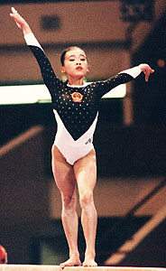

Sang Lan (CHN)
1997 Chinese V Champion

Lan was born on June 11, 1981 in Ningbo. Vault was her best event, and at the 1996 American Cup she performed a layout Cuervo. Tragically, on July 21, 1998 she broke her neck at the Goodwill Games during a practice vault.
Lan spent the next 10 months in New York City, learning how to cope with her disability at the Kessler Institute for Rehabilitation. After returning to China, she was accepted into Beijing University's School of Journalism and Communication. In late 2003, she was hired to host a show on Star TV (a Mandarin channel) called "Sang Lan Olympics 2008." Visit her website for current information (in Chinese only).
Competition Results
1995
CHN Championships: 2nd V
USA-BLR-CHN Meet: 11th AA
1996
American Cup: 7th AA
CHN Championships: 2nd V
Intl. Mixed Pairs: 11th Team
1997
CHN Championships: 1st V
1998
CHN Championships: 2nd V
Intl. Team Championships: 3rd Team, 17th AA
This page was created on September
02, 2005 and was last updated on June 11, 2007.
© Gymn Forum